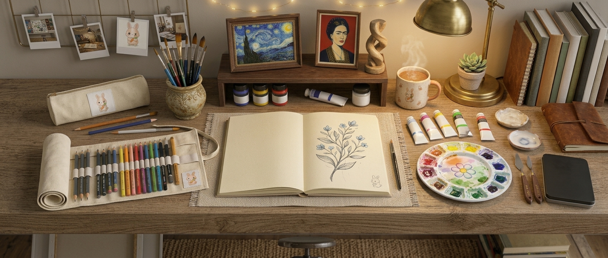
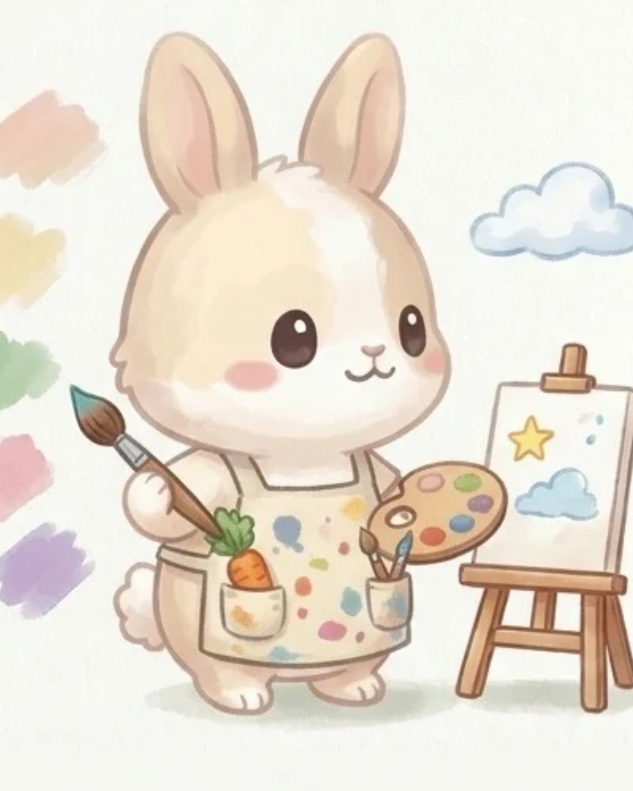
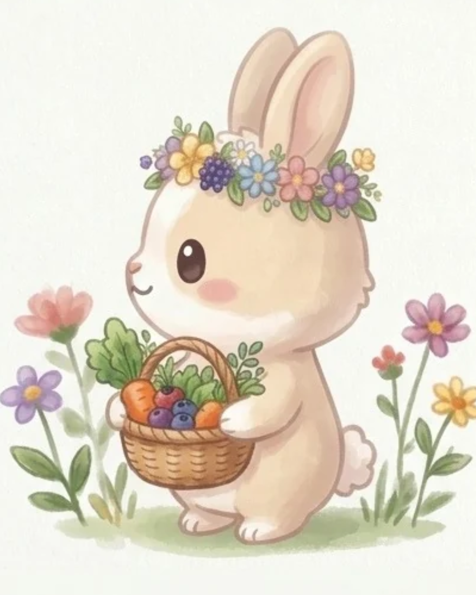
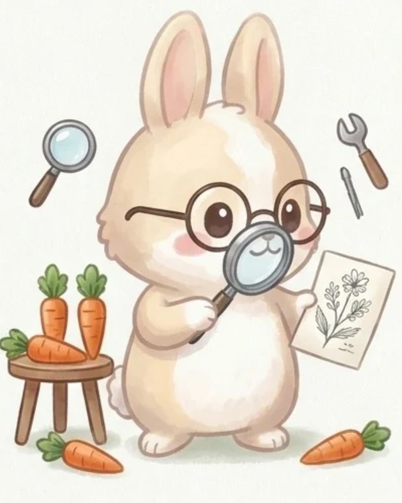
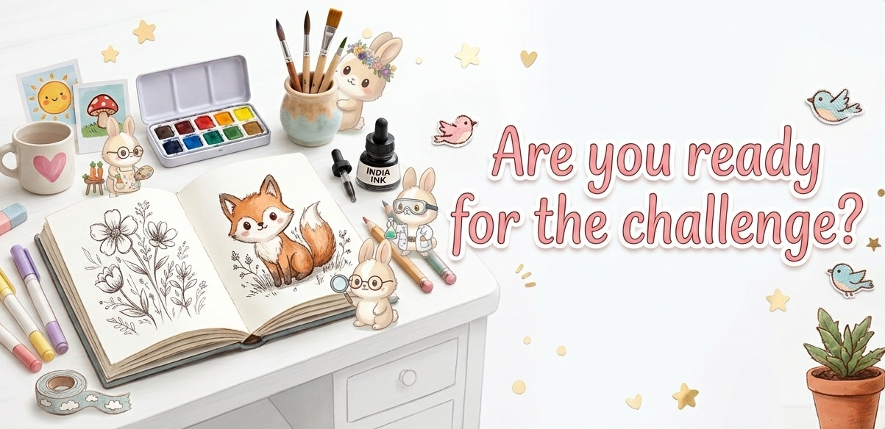

Curious About Your Creative Side?
Let's discover what inspires you!
Everyone has their own way of being creative. Some people love dreamy colors, some find inspiration in nature, while others enjoy experimenting with bold ideas and tiny details.
Take a little quiz to explore your artistic preferences, then find a creative challenge to bring your imagination to life!

Discover Your Art StyleACTIVITY 01
Discover Your Art Style
Have you ever wondered what kind of artistic style you might enjoy?
Answer a few fun questions about your preferences, favorite colors, and sources of inspiration. Let's see which creative direction feels most like you!

The Dreamy Creator
Loves soft colors, imagination, and dreamy atmospheres.

The Nature Lover
Finds inspiration in flowers, plants, animals, and nature.
The Bold Experimenter
Enjoys bold colors, unusual ideas, and creative experiments.

The Detail Enthusiast
Enjoys tiny details, patterns, and careful observations.
Ready to Find Your Creative Side?
There are no right or wrong answers. Just choose what feels most interesting to you!
ACTIVITY 02
Your Little Art Challenge
Now that you've explored your creative side, it's time to turn your inspiration into action!
Choose a challenge that matches your art style, or let Lucy surprise you with a completely random creative idea.

Every Artist Starts Somewhere!
Remember, creativity is not about being perfect. It's about exploring ideas, trying new things, and enjoying the process.
So grab your favorite art supplies, follow your imagination, and create something that feels like you!
Find More Inspiration